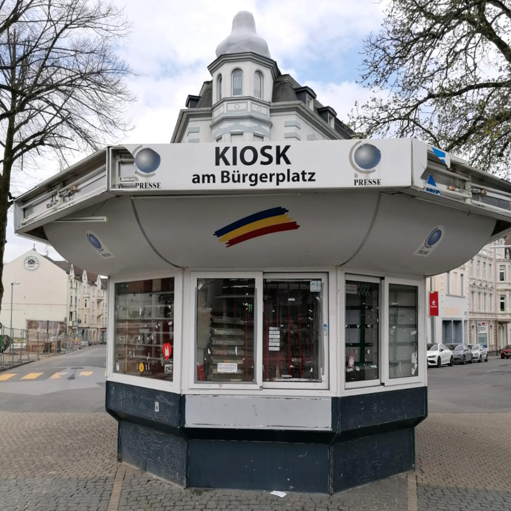
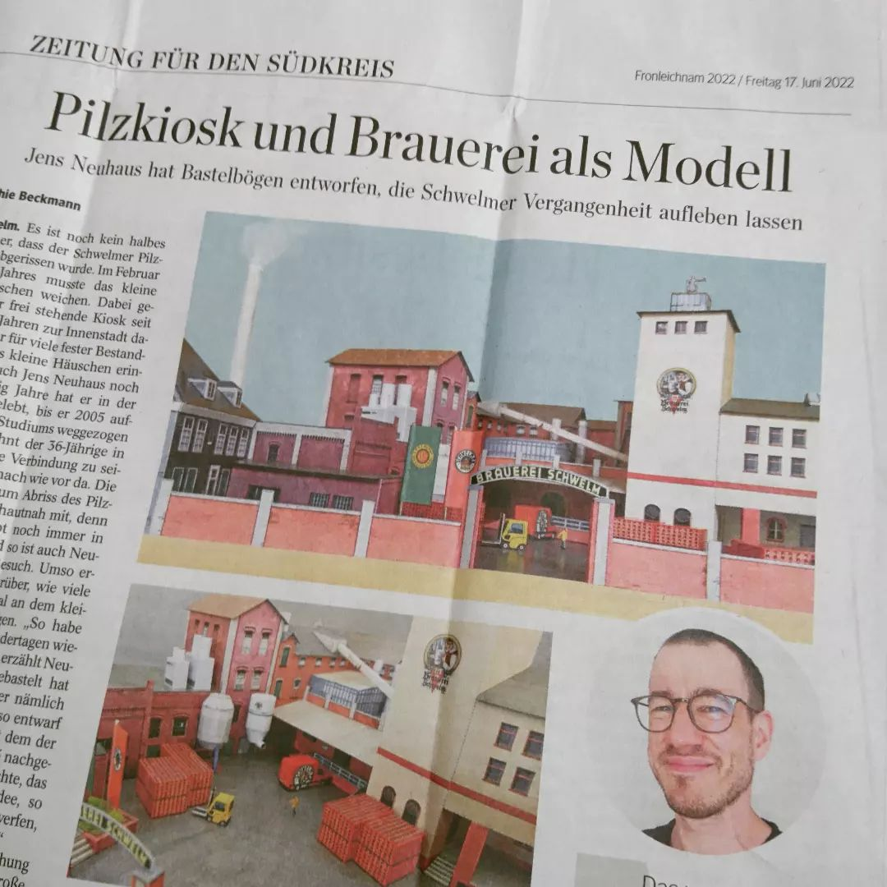
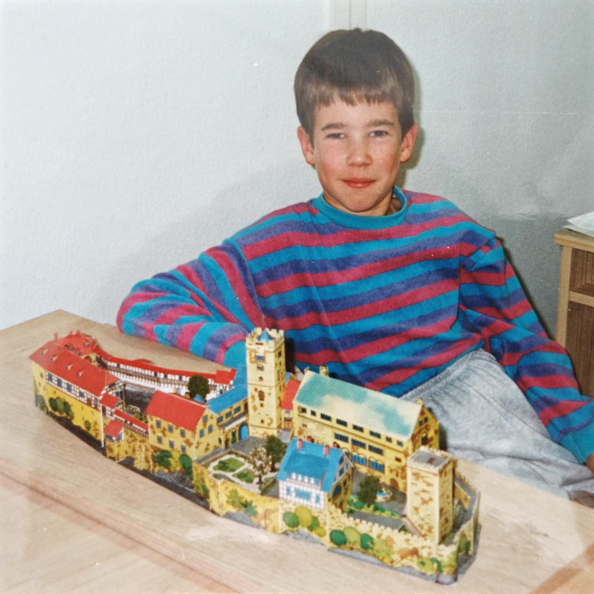

Über diese Website
Was ist ein Papierdenkmal?
Der kultige Zeitungskiosk an der Ecke, die verschwundene Traditionsbrauerei in der Stadtmitte, das idyllische Forsthaus am Rande des Spazierwegs oder der hoch aufragende Fernsehturm über den Dächern des eigenen Viertels. Bauwerke wie diese besitzen eine Gemeinsamkeit: Sie haben sich über ihre vordergründige Funktion und bauhistorische Bedeutung hinaus zu liebgewonnenen Orten entwickelt, die für Menschen einen emotionalen Wert besitzen. So tragen sie dazu bei, dass aus dem persönliche Wohnumfeld erst eine lebenswerten Heimat wird.

Hatte schon bessere Zeiten gesehen: der Schwelmer »Pilzkiosk« im Frühjahr 2021.Meine Bastelbögen sind eine Liebeserklärung an ebenjene Bauwerke, die den Menschen etwas bedeuten. Werden sie im Miniaturformat nachgebaut, offenbaren sich manchmal Details und Facetten, die am Original bislang unentdeckt geblieben sind. Auch längst aus dem Stadtbild verschwundene Gebäude können auf diese Weise rekonstruiert und in verkleinerter Form erhalten werden. Dabei besitzt der Papiermodellbau den unschätzbaren Vorteil, nur wenig Material und Werkzeug zu erfordern. Mit einfachsten Mitteln entstehen faszinierende Abbilder, deren Herstellung neben etwas Fingerspitzengefühl vor allem Zeit und Muße benötigt.
Wie kam es dazu?
Der Ursprung dieser Website liegt im Frühjahr 2021, als in meiner Heimatstadt Schwelm die Neugestaltung der Stadtmitte Aufsehen erregte: Für einen modernen Rathausneubau sollte ein kleiner, alter Kiosk weichen. Zu diesem Zeitpunkt bereits leerstehend und in beklagenswertem Zustand, erfuhr der Verkaufspavillon vor seinem Abriss noch einmal ungeahnte Zuneigung aus der Bevölkerung. Zeitungsberichte, Facebook-Gruppen und eine Petition für den Erhalt änderten jedoch nichts: Der beliebte »Pilzkiosk« verschwand nach mehr als 40 Jahren für immer aus dem Stadtbild.

15 Minuten Ruhm im Sommerloch: Die Westfälische Rundschau berichtete 2022 im Lokalteil.Durch die emotionalen Reaktionen auf den Verlust des kleinen Kiosks reifte bei mir die Idee, das Gebäude in anderer Form zu erhalten. Ein Modell musste her. Doch kein aufwendiges Unikat. Auch keine Miniatur aus dem 3D-Drucker. Am besten etwas, das sich schnell und einfach reproduzieren lässt, damit alle interessierten Schwelmer:innen ihr persönliches Andenken zuhause nachbauen können. Warum nicht ein Papiermodell? Der erste Entwurf war rasch gemacht – und zwei Wochen später stand ein ausgearbeiteter Bastelbogen zum Download bereit.
Motiviert von der starken Resonanz in den sozialen Medien, suchte ich umgehend nach einem »Anschlussprojekt«. Umfangreicher sollte es sein und stadtgeschichtlich bedeutsamer. Schnell fiel meine Wahl auf die ehemalige Brauerei Schwelm, deren Abriss sich im Juni 2022 zum zehnten Mal jährte. Nach vielen Monaten der Recherche, Konstruktion und Ausarbeitung war es pünktlich zum Jahrestag soweit: Die einstige Brauerei, von vielen Schwelmer:innen noch immer sehr geliebt, erschien als zweites Papierdenkmal. Seither entstehen in unregelmäßigen Abständen immer wieder neue Modellbögen, die ich zum kostenfreien Download anbiete.
Wer steckt dahinter?
Ich bin Jens Neuhaus, Jahrgang 1985 und »imitierter« Kölner mit rechtsrheinischem Wohnsitz. Die Ideen für neue Modelle finde ich daher vor allem zwischen der Niederrheinischen Bucht und dem Ruhrgebiet. Eigene Vorgaben setze ich mir bei der Konstruktion nicht, sondern probiere mit jedem Projekt gern andere Techniken aus oder erkunde unbekannte Baustile und Gebäudetypen. Die Ergebnisse können mal sehr einfach gehalten sein, gelegentlich aber auch komplexer ausfallen.

Und er sah, dass es gut war: Momentaufnahme aus dem heimischen Hobbykeller im Herbst 1995.Mein Interesse am Papiermodellbau reicht weit zurück. Als Kind der 90er Jahre wurde ich durch Bastelbögen aus der Micky Maus an das Medium herangeführt und klebte zunächst kuriose Heft-Beilagen wie die Lärmröhre oder den Multi-Klapp-Spaß-Würfel zusammen. Ihren Höhepunkt fand diese frühe Schaffensphase mit der Wartburg bei Eisenach, einem detailreichen Bogen im Maßstab 1:275, konstruiert von Siegfried Beutler. Während trüber Herbsttage des Jahres 1995 vertiefte ich mich begeistert in dieses herrliche Modell.
Rund 25 Jahre später ist meine Faszination für Papier und Karton ungebrochen. Heute schätze ich besonders die Einfachheit des Materials, das den eigenen Ideen nicht im Weg steht. Ohne im Fachhandel teure Plastikteile zu kaufen, entstehen Papiermodelle allein aus der eigenen Kreativität und Fingerfertigkeit heraus. Ein geradezu anachronistischer Reiz ergibt sich daraus, dass der Kartonmodellbau keine Abkürzungen zulässt: Nur geduldiges Arbeiten in den Mußestunden führt zu einem sauberen Ergebnis. Das Resultat erhält man nicht per Premiumversand am nächsten Tag – doch die Zufriedenheit über das Geleistete ist dafür umso größer.
Kontakt
Sie haben eines meiner Modelle nachgebaut, verfeinert oder sogar in ein Diorama eingebettet? Dann freue ich mich immer über eine Rückmeldung per Mail oder in den sozialen Medien. Am liebsten natürlich mit Foto, denn solches Feedback motiviert ungemein. Auch falls Ihnen Fehler aufgefallen sind, Teile schlecht zusammenpassen oder die Anleitung schlicht unverständlich erscheint, sind Hinweise, Anregungen und konstruktive Kritik stets willkommen.
Zu erreichen bin ich bei Instagram und Facebook oder (am liebsten) per Mail unter:
papierdenkmal@posteo.de